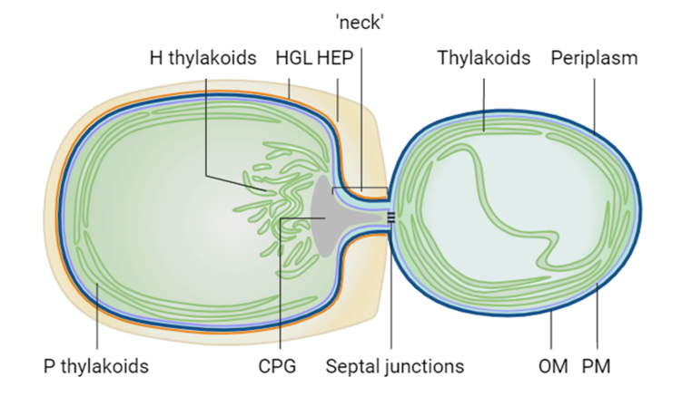

mRNA Localization & Thylakoid Protein Biogenesis in Cyanobacteria
PhD Research, Queen Mary University of London | 2019–2023

- Investigated mRNA localisation and thylakoid protein biogenesis in cyanobacteria, integrating quantitative imaging analysis to study molecular distribution.
- Optimised RNA-FISH protocols to visualise intracellular mRNA patterns, applying ImageJ analysis for signal quantification.
- Constructed 3 mutants in Anabaena and identified an RNA-binding protein important for the thylakoid protein translation and assembly (published as first author DOI: 10.1128/jb.00328-24).